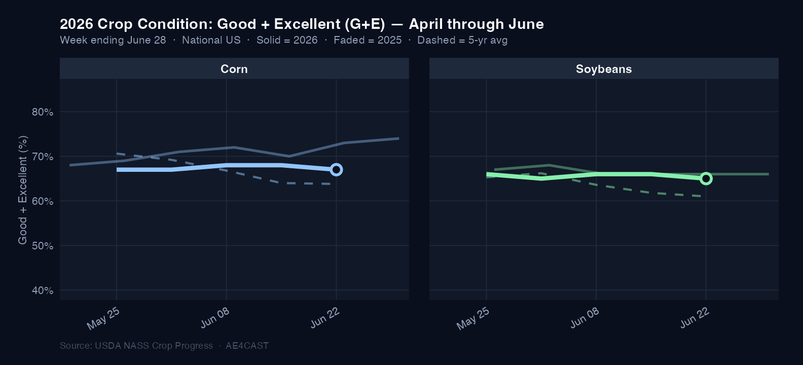
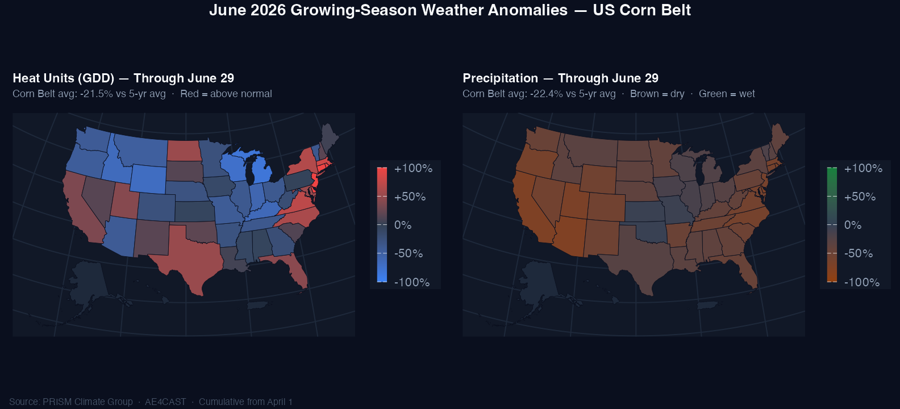

US Corn & Soybean Update — crops planted, conditions deteriorating, and a critical pollination window opening. What happened in June and what to watch in July.
The 2026 corn and soybean crops entered June in solid shape. Corn Good+Excellent (G+E) ratings held in the 67–68% range through mid-month, while soybeans tracked 65–66%. But the final week of June brought the first meaningful deterioration: corn P+VP climbed to 8% (from 5–6% earlier in the month), and the 6–7 point G+E gap versus year-ago (73–74% in 2025) widened as the season progressed. Soybeans dipped to 65% by week ending June 28, slipping below year-ago levels for the first time this season.
Planting wrapped up efficiently. Corn reached 97% planted and emerged — well ahead of pace at this point last year. Soybeans reached 95%+ planted with 96% emerged. By late June, corn silking had reached 9% nationally. Pollination is now underway.
Corn G+E: 67% (week ending June 28) — down 6–7 points from 73–74% at the same point in 2025. G+E ratings that slip below 65% during pollination are historically associated with meaningful national yield loss — and have triggered sharp price rallies in futures markets.

June's weather was the most significant market variable of the season so far. Cumulative growing-season heat units (measured from April 1) finished June at +118% above the 5-year average, while precipitation came in at −47.8% below normal across the Corn Belt.
This is not a passing dry spell. It represents a sustained heat-and-dryness combination that has built steadily over two months — arriving precisely as the corn crop enters its most critical growth window. Heat and moisture stress during pollination is the most bullish price catalyst in the corn market: it directly threatens kernel set and national yield, driving the supply-side shock that sends futures higher.
−47.8% — Corn Belt cumulative precipitation vs. the 5-year average through June 29. Combined with a heat unit surplus of more than double the seasonal norm, the moisture deficit is the single most important variable heading into July.

Corn exports delivered a standout June. Accumulated shipments through the week ending June 18 ran +28% ahead of last year at the same point in the marketing year. Mexico anchored demand as both the top weekly and year-to-date buyer, with consistent weekly volumes supporting strong physical movement.
Soybean exports told the opposite story. Cumulative shipments ran −19% behind year-ago, reflecting the continued headwind from reduced Chinese buying. Egypt appeared as a notable weekly buyer, but year-to-date soy export volume to China has declined meaningfully. New-crop booking activity has been slow, keeping the soybean balance sheet under pressure.
Corn accumulated exports: +28% YoY · Soybean accumulated exports: −19% YoY. The divergence reflects fundamentally different demand structures entering the 2026/27 marketing year — and sets up very different price risk profiles heading into summer.
As of June 30, AE4cast daily yield models show both corn and soybean yield trajectories trending above the 5-year historical average at the national level. Core Corn Belt states are driving the above-trend reading for corn, while regional variation is significant — pockets of the Southeast and Northern Plains show below-trend signals.
However, the late-June weather deterioration has begun introducing meaningful downside uncertainty. Yield signals are directionally positive entering July, but they are not locked in — the next 3–4 weeks of weather will be decisive.
Absolute yield estimates are proprietary and available by subscription. AE4cast publishes directional inference only in public reports.
The 2026 crop is at a critical juncture. The next four weeks will largely determine whether above-trend yield signals hold or give way to a tighter supply outlook — and prices reflect it.
Peak pollination next 2–3 weeks. Watch for any single-week G+E drop below 65% — historically a bullish price inflection point for corn futures, signaling meaningful yield loss risk. Expect elevated volatility around every Monday NASS report.
Price context: corn entered July near 8-month lows (~$4.00/bu on June 29). Today's +10¾¢ weather bounce is the first sign of the market pricing pollination risk — with room to rally toward early-2025 highs near $4.80 if stress persists.
Still a more forgiving stage than corn, but moisture deficit matters more as August nears. The bigger near-term driver may be demand: any significant Chinese new-crop purchase announcement would be a sharp price catalyst.
Corn's pace is sustainable. For soybeans, USDA's balance sheet assumes Chinese buying that hasn't materialized. Watch weekly ESR sales (Thursdays) for any sign of re-engagement.
The Corn Belt 6–10 and 8–14 day precipitation outlooks will drive price action this month. Any forecast shift toward widespread rains would relieve pressure; continued dryness amplifies the bullish setup.
| Date | Event | What to Watch |
|---|---|---|
| June 30 (today) | USDA NASS Acreage Report |
Corn 95.3M acres (flat vs. March); soybeans 85.4M acres (+665K — mildly bearish for soy balance sheet) |
| Every Monday | Weekly NASS Crop Progress & Condition |
G+E ratings during pollination — most closely watched data in the grain market this month |
| Every Thursday | Weekly USDA ESR Export Sales |
New-crop soybean bookings to China; corn pace sustainability |
| July 11 | USDA WASDE + Crop Production |
First survey-based yield estimates — will set the price tone for the rest of the month |
The USDA NASS June Acreage Report (released today, June 30) confirmed corn planted area at 95.3 million acres — essentially unchanged from the March Prospective Plantings. Soybean planted area was revised up to 85.4 million acres (+665,000 acres vs. March intentions). The soybean acreage beat is a modest headwind for new-crop prices on an already-pressured balance sheet.
AE4cast publishes directional inference publicly. For absolute daily yield estimates, state-level breakdowns, and in-season analytics updated every morning — contact us for access.
Request Access →